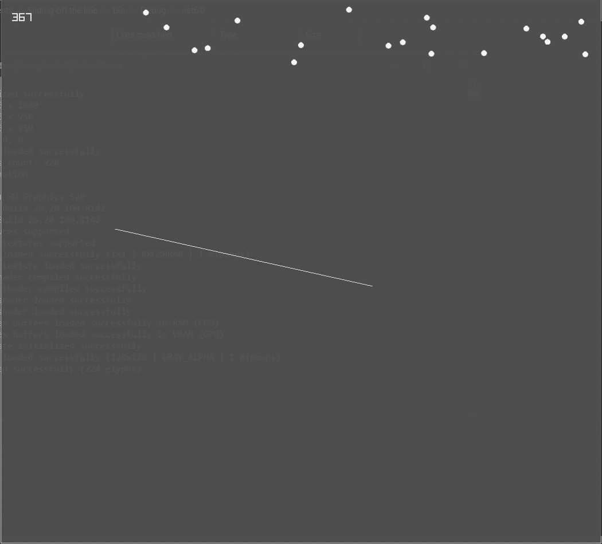
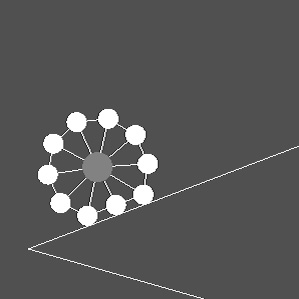

Developing your own physics engine can be seriously hard, as it involves a lot of calculations, vectors usage and obviously lots of physics formulas too. Still I decided to give it a try because I wanted to do some experiments on my programming skills and thought it could be something great for the purpose.
How and Why I Started?
Although it is currently written in C#, it's initial development took place even before I wrote my first “Hello World” C# program. I worked on it when I only knew Python and C++, so that I decided to work on it using C++. It initially was inspired by Gonkee's Soft Body Simulation Video, but with an obvious simple change, I was going to start with Circles instead of having Mass Points initially and then changing them to circle.
I decided to use Raylib, for rendering and occasionally for inputs for debugging purposes. As it was the only library I was having experience with and had made a couple of game with it. It felt much advanced in the sense of a graphics library.
The first time I was working on it, it wasn't on Github, so I made different folder for different levels of complexity I was going to work with, first folder having a project with circles colliding and responding to collision with each other properly, and second folder having two circles being connected through a spring, Which turned out to be a failure. The circles seemed to be colliding and interacting with each other pretty well but the spring wasn't exerting force on the circles it was connected to. I tried a lot overcome this failure and make it work properly, but it didn't worked. Which mentally forced me to stop working on this project, and that is what I did.
After Timespan of 5 Months
After around 5 months, when I was having few repositories on my Github Profile, I wanted to work on something interesting and expand my Github Profile too, and suddenly a thought sparkled in my head which lead me to that old physics simulation code. I made a new repository with the name of Radius2D, it was named after this because it's main object or polygon that was used in the physics world was a circle, and a circle have a unique property named of course RADIUS, and as was and is limited to a 2d canvas so I added 2D and named it Radius2D, I first uploaded the files instead of pushing a commit, because the initial files were in C++ and I wanted to change that to C#, I used a lazy way. Reason for switching to C# was because I was having better Object Oriented Programming approach in C# and it have more sophisticated vector calculations.
Wrote some C# files to make the same thing in different language, most of the mathematical formulas were copied from the C++ files and modified for C# and after a bit of trail and error, it got working exactly the same, but I just realized the previous one was working fine either. I looked at the built of the old C++ version and realized it was too cranky to be on Github.
I was sure the problem was hidden somewhere in the collision response as I was drawing circles in different color when they were colliding with each other. This cranky result pushed me to try different way of handling collision response. And they were also not showing any significantly better result.
Getting Over The Cranky Results
After doing research on collision response I couldn't find any useful material except for Elastic Collision on Wikipedia and a Youtube Playlist having all the explanation and coding of building a Physics Engine in JavaScript.
After going through all the videos of the playlist and reading the Wikipedia I realized a mistake. The mistake was in my each attempt I was either trying the penetration resolution approach or the elasticity resolution approach or some other approaches using force vector. Turns out it it needs to have both penetration and elasticity resolution approach at the same time.
Solution to the Crankiness
Penetration resolution is when we push both circles apart by using their position vector. Whereas on the other hand Elasticity resolution is when we push the circles apart using the velocity vectors of them. Combination of both these approaches result in a much better result.
// Calculating Penetration
Vector2 distance = circ1.pos - circ2.pos;
float length = (float) Math.Sqrt(distance.X * distance.X + distance.Y * distance.Y);
Vector2 normal = distance / length;
float depth = (circ1.radius + circ2.radius) - length;
Vector2 pentrateResolve = normal * depth / (circ1.mass + circ2.mass);
// Resolving Penetration
circ1.pos += pentrateResolve * circ1.mass;
circ2.pos -= pentrateResolve * circ2.mass;
// Calculating Elasticity Resolution
Vector2 distance = circ1.pos - circ2.pos;
float length = (float) Math.Sqrt(distance.X * distance.X + distance.Y * distance.Y);
Vector2 normal = distance / length;
float productOfElasticity = circ1.elasticity * circ2.elasticity;
float ratioOfMass = circ1.mass / circ2.mass;
Vector2 relativeVelocity = circ1.vel - circ2.vel;
float seperatingVelocity = Vector2.Dot(normal, relativeVelocity);
float newSeperatingVelocity = seperatingVelocity * -1 * productOfElasticity;
float seperatingVelocityDifference = newSeperatingVelocity - seperatingVelocity;
float impulse = seperatingVelocityDifference / (circ1.inverseMass + circ2.inverseMass);
Vector2 impulseVector = impulse * normal;
// Resolving Elasticity
circ1.vel += impulseVector * circ1.inverseMass * deltaTime * 60;
circ2.vel -= impulseVector * circ2.inverseMass * deltaTime * 60;
Adding Line Segments to the World
After that I thought using static polygons could be difficult as shown in Gonkee's Video, as they were composed of line segments I thought to use them instead and technically could use them to make polygons. But calculating if the circle collides with the line or not was hard, but I came through this explanation that if we can find the Area of a Triangle using it's three points (Both ends of the line and center of the circle), that could be used to find the Triangle's height (or the least distance between the circle and the line). So that height could be compared to the circle's radius to know if it's overlapping with it or not?
// Find the Area of A Triangle
private float TriangleArea(Vector2 a, Vector2 b, Vector2 c)
{
Vector2 AB = new Vector2(b.X - a.X, b.Y - a.Y);
Vector2 AC = new Vector2(c.X - a.X, c.Y - a.Y);
float crossProduct = AB.X * AC.Y - AB.Y * AC.X;
if (crossProduct >= 0)
{
return crossProduct / 2;
}else
{
return crossProduct * -1 / 2;
};
}
Even with Line Segments the same approach of collision response was used, penetration resolution and elasticity resolution. This works completely fine but the problem occurs when the ball slides of the Line Segment, technically it never slides of the Line, even when it should.
To solve this problem I calculated four vectors, two of which are unit vectors of the line segment heading in direction of the other point of Segment, whereas the other two vectors are pointing from two sides of line segment to center of circle. This is much better explained by Andrew Weller.
Vector2 v1 = (l.p - l.q) / l.length;
Vector2 v2 = (l.q - l.p) / l.length;
Vector2 v3 = circ.pos - l.p;
Vector2 v4 = circ.pos - l.q;
if (Vector2.Dot(v2, v3) > 0 & Vector2.Dot(v1, v4) > 0)
{
Vector2 dist = l.p - l.q;
float Base = (float) Math.Sqrt(dist.X * dist.X + dist.Y * dist.Y);
float height = TriangleArea(l.p, l.q, circ.pos);
return height;
}else
{
return circ.radius * 2;
}
Attempt at Verlet Integration
My real motivation for using Verlet Integration was to make a cloth simulation, because I got to know that I couldn't implement joints between circles without using the Verlet integration. This was mostly inspired by Pezzza's Work Video on Verlet Physics Engine.
Switching from Euler's to Verlet Integration was nor going to be easy and neither promising in the start, so I made a branch in the local git repository to work on it. After removing all of the stuff from Euler's Integration and attempting to implement Verlet integration, the result seemed to be saddening, even after having a lot of tweaks and making a lot of small changes from some undefined reasons the results were not going as expected. These consequences pushed me to just delete that branch and continue working on just Euler's Integration, which don't support implementing Joints but it does supports implementing Springs.
Springs, Foundation of Soft Body
This is where I had to watch Gonkee's Video again to grab the concept of implementing springs in the simulation. It eventually turned out to be easier than I thought it would be. Just after few steps springs turn out to work perfectly fine. And that is where I started to do multiple experimentation on springs. The first thing I wanted to do with springs was obviously a Soft Body Simulation inspired by Gonkee. I had a hard time figuring out the algorithm to connect circles horizontally, vertically and even diagonally. So that is why I decided to use a circular soft body instead. I spawned a Central Circle and spawned few smaller Circles around it and tried to connect each of them to the Central Circle through a Spring and connect each of those smaller circles with their neighbouring circle through a spring.
Elastic Cloth
After making a soft body, I thought if I could make a Cloth Simulation too. I tried Verlet Integration because I wanted to make a Cloth Simulation, but it failed. What if I could make one without using Verlet Integration. The only difference could be that instead of being Normal Cloth Simulation it would be an Elastic Cloth Simulation.
So I spawned some Circles in row by column manner, and the circles on the top row were given a mass of zero, so that they could not move and help other Circles hang. Connecting the Circles with each other was a difficult job but was done by a bit of trail and error. It didn't looked good due to the circles being so visible, I decided to turn their radius to zero and even stop rendering them to reduce a minor effort of processing. It looks good but a cloth being perfectly square felt odd, so a simple step was taken to increase the length of vertical Spring by 50% by that of horizontal Spring's Length and the circles were also being spawned with vertically more distant then their horizontal distance. Much Better!
I also added another small feature to show the effect of wind.
// Iterating through the List of Balls/Circles
foreach (Circle circle in circles)
{
// Applying Force to Circles (Wind Force) to Showcase the Cloth Simulation Effect
if (Raylib.IsMouseButtonDown(MouseButton.MOUSE_BUTTON_LEFT))
{
circle.force.X += 0.05f * circle.mass;
}else if (Raylib.IsMouseButtonDown(MouseButton.MOUSE_BUTTON_RIGHT))
{
circle.force.X -= 0.05f * circle.mass;
}
}
This is how much Radius2D currently have been developed, it's source code is hosted on Github. It might not be possible to keep working on it consistently nowadays due to studies. But hopefully would work on it in future.